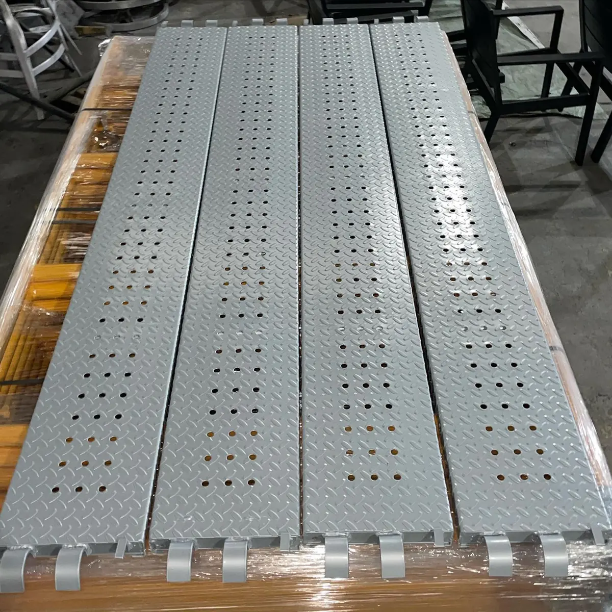

La pintura electrostática sobre galvanizado se puede hacer y es una solución habitual cuando se busca color y mayor protección, pero exige más cuidado que pintar acero sin recubrir. El zinc necesita una preparación específica y el horneado debe controlarse para evitar burbujas.
A la combinación de galvanizado y pintura se le llama sistema dúplex. Aquí te explicamos cómo se hace, qué defectos aparecen y qué coordinar con tu galvanizador y tu maquilador.
Esta guía trata de cómo pintar sobre galvanizado. Si todavía decides entre pintar o galvanizar, la comparativa está en recubrimiento en polvo vs galvanizado. Para la tecnología base, consulta qué es la pintura electrostática.
¿Se puede pintar acero galvanizado con pintura en polvo?
Sí, y es una práctica común en estructuras, mobiliario urbano, herrería y perfiles. La pintura en polvo se aplica y se hornea igual que en otros metales; lo que cambia es la preparación de la superficie y el control del curado.
También lo verás como pintura electroestática sobre acero galvanizado o como pintar galvanizado con polvo. Todas se refieren al mismo sistema.
Por qué pintar sobre galvanizado es más delicado
- Superficie de zinc: es química y físicamente distinta del acero, y el polvo adhiere mal si no se prepara para ella
- Gases atrapados: el galvanizado puede liberar gas al calentarse en el horno, y ese gas deja burbujas o poros en la película
- Tratamientos posteriores: algunos acabados que se aplican al galvanizar para protegerlo pueden dificultar la adherencia de la pintura
- Superficie irregular: gotas, rebabas y escurrimientos de zinc se notan a través de la pintura si no se retiran
Tipos de galvanizado y qué cambia en cada uno
| Tipo | Cómo es | Qué considerar |
|---|---|---|
| En caliente (inmersión) | Capa gruesa de zinc | Más riesgo de burbujas y rebabas |
| Electrogalvanizado | Capa delgada y lisa | Superficie más uniforme |
| Lámina galvanizada | Zinc aplicado en continuo | Frecuente en gabinetes y paneles |
Saber qué tipo tienes es el primer dato que pedirá tu maquilador, porque cambia cómo se prepara y cómo se cura la pieza.
Cómo se pinta sobre galvanizado paso a paso
Estos son los pasos generales de la industria; el detalle de cada uno lo define el proceso del maquilador:
- Identificar el tipo de galvanizado y su estado (nuevo o con años de exposición).
- Revisar la superficie para detectar rebabas, gotas de zinc y tratamientos que interfieran.
- Preparar la superficie con un pretratamiento adecuado al zinc, que limpie y deje la capa lista para anclar el polvo.
- Aplicar el polvo con carga electrostática, igual que en cualquier otro metal.
- Hornear con un curado adaptado al galvanizado, para que el gas atrapado salga sin marcar la película.
- Verificar el acabado y la adherencia antes de entregar.
Los principios del pretratamiento los explicamos en preparación de superficie para powder coating, y el panorama completo por metal en pintura en polvo para metal. En Steel Paint procesamos piezas galvanizadas cuando el sistema lo requiere, y confirmamos el proceso al cotizar con los datos de tu pieza.
Qué coordinar con el galvanizador antes de galvanizar
La forma más económica de evitar problemas es pensar en la pintura antes de que la pieza se galvanice. Estos puntos conviene acordarlos con el galvanizador:
- Avisar que la pieza se pintará después, para que no se aplique ningún tratamiento final que dificulte la adherencia.
- Pedir que se retiren rebabas, gotas y escurrimientos de zinc, que de otro modo se marcan bajo el polvo.
- Revisar el diseño de piezas huecas, que necesitan aberturas para que el zinc y los gases salgan.
- Definir el tipo de galvanizado según el uso y el acabado esperado.
- Acordar cómo se manejan y empacan las piezas para no rayar la superficie antes de pintar.
Defectos más comunes al pintar galvanizado
- Burbujas y poros: vienen del gas del zinc durante el horneado y se previenen con preparación y curado adecuados
- Desprendimiento de la película: señala una preparación insuficiente o un tratamiento previo que impidió la adherencia
- Aspecto irregular: las rebabas y gotas de zinc se marcan bajo el polvo; hay que retirarlas antes de pintar
- Diferencias de color: el fondo de zinc puede influir en tonos claros; define el color con una muestra, como en colores de pintura electrostática y carta RAL
Galvanizado nuevo y envejecido: no se tratan igual
Un galvanizado recién hecho y uno que lleva tiempo a la intemperie se comportan distinto. El zinc expuesto durante años forma óxidos y productos de corrosión blancos que deben retirarse antes de pintar, y la superficie suele estar más irregular que en una pieza nueva.
Pintar sobre una capa envejecida sin tratarla es la forma más segura de que la película se desprenda. Si tu pieza no es nueva, avisa su antigüedad y su estado desde la cotización. Y si el galvanizado ya muestra corrosión avanzada en el acero, conviene evaluar primero si la pieza todavía justifica el sistema dúplex.
Defecto, causa probable y qué hacer
| Defecto | Causa probable | Qué hacer |
|---|---|---|
| Burbujas | Gas atrapado en el zinc | Ajustar curado y preparación |
| Desprendimiento | Mala adherencia | Revisar tratamiento previo |
| Superficie irregular | Gotas y rebabas de zinc | Retirarlas antes de pintar |
| Tono distinto | Fondo de zinc visible | Validar con muestra |
Para comprobar la adhesión después de pintar se usan pruebas como la ASTM D3359 (corte cruzado), que sirven como referencia; pide el criterio de aprobación cuando te las citen.
Cuándo vale la pena el sistema dúplex
Conviene cuando la pieza va a exterior o a ambientes agresivos y además necesita color o buen aspecto: estructuras, barandales, mobiliario urbano o postes. Para un uso interior sin exigencia estética, el galvanizado solo suele bastar, y para uno de color sin gran exposición, pintar acero directamente puede ser suficiente. El análisis completo está en la comparativa de recubrimiento en polvo vs galvanizado.
En exterior, además, elige el polvo por su resina; las diferencias están en tipos de pintura en polvo. Y si estás evaluando proveedores para este trabajo, te sirve cómo elegir un maquilador de pintura en polvo en Monterrey.
Errores comunes al pintar sobre galvanizado
- No avisar al maquilador que la pieza está galvanizada ni de qué tipo.
- Mandar piezas con tratamientos finales de galvanizado sin consultar si afectan la adherencia.
- Aplicar el mismo proceso que en acero sin recubrir.
- Pasar por alto las rebabas y gotas de zinc, que se ven en el acabado final.
- Elegir un polvo sin considerar el uso exterior ni la resina adecuada.
Ejemplos por situación
- Estructura o poste exterior en un ambiente agresivo: el sistema dúplex aporta color y una capa de protección adicional.
- Gabinete o panel de lámina galvanizada para interior: lo habitual es lámina con zinc aplicado en continuo, que suele tener una superficie más uniforme.
- Barandal o mobiliario de exterior que ya se galvanizó: antes de pintar, hay que confirmar el estado del zinc y los tratamientos previos.
- Pieza con galvanizado antiguo y envejecido: se revisa el estado de la superficie, porque el zinc envejecido pide otra preparación que el nuevo.
Preguntas frecuentes sobre pintura electrostática sobre galvanizado
¿Se puede pintar acero galvanizado con pintura electrostática?
Sí. Se pinta con pintura en polvo siguiendo un proceso adaptado: la superficie de zinc requiere una preparación específica y el horneado debe controlarse para evitar burbujas. El resultado es el sistema dúplex.
¿Qué es el sistema dúplex?
Es la combinación de galvanizado y pintura en polvo sobre la misma pieza. El zinc protege el acero y la pintura añade barrera y acabado, de modo que la protección total suele ser mayor que la de cada capa por separado.
¿Por qué salen burbujas al pintar galvanizado?
El galvanizado puede liberar gases atrapados en el zinc cuando la pieza se hornea, y esos gases levantan la película. Se previene con una buena preparación y un proceso de curado adaptado al galvanizado.
¿Hay que quitar el galvanizado antes de pintar?
No. La pintura se aplica sobre el zinc, pero la superficie debe estar limpia y preparada. Algunos tratamientos posteriores al galvanizado pueden interferir con la adherencia, por eso conviene hablar con el galvanizador antes.
¿Cuándo conviene pintar sobre galvanizado en lugar de solo galvanizar?
Cuando necesitas color, un acabado estético o una protección extra en ambientes agresivos. Si lo único que buscas es protección económica contra la corrosión, el galvanizado solo puede bastar.
Pensar en la pintura desde el galvanizado
La mayoría de los problemas al pintar galvanizado se evitan antes de llegar al maquilador, cuando el galvanizador todavía sabe que la pieza se va a pintar. Si desde ahí defines el uso final, el tipo de acabado y el sistema completo, el pintado se vuelve un paso más y no una corrección. Es el momento más barato para decidir bien.